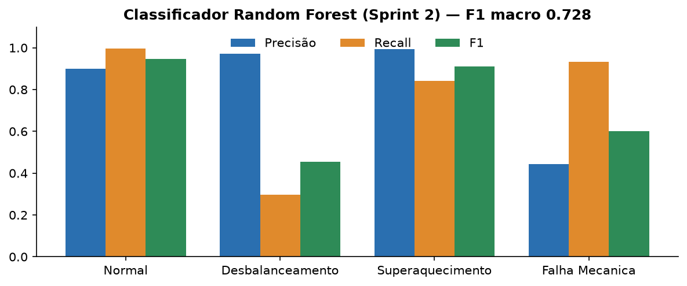
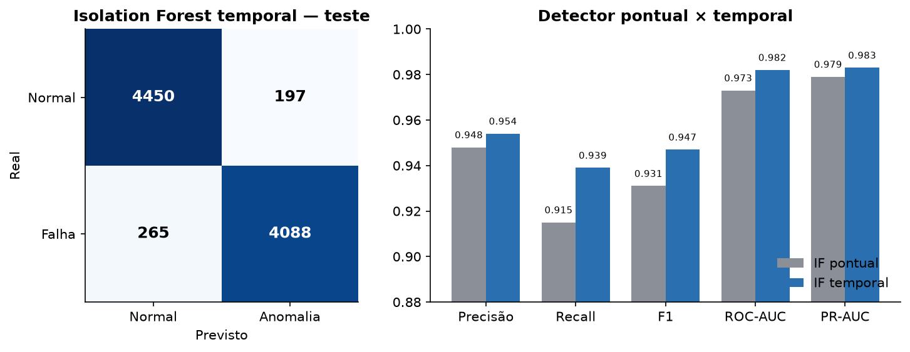
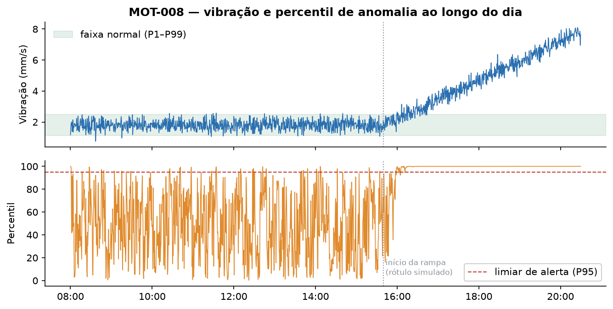
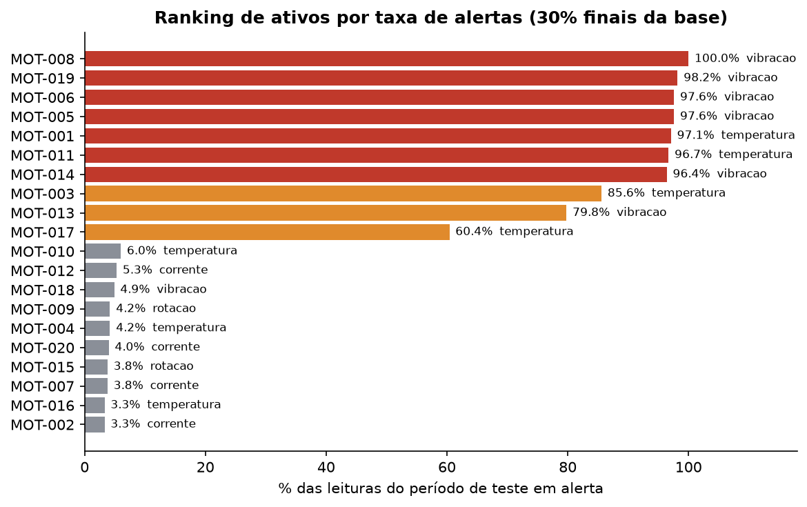
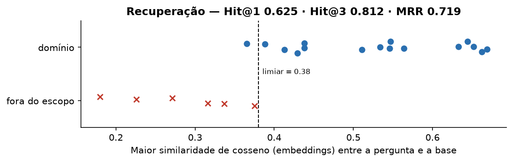
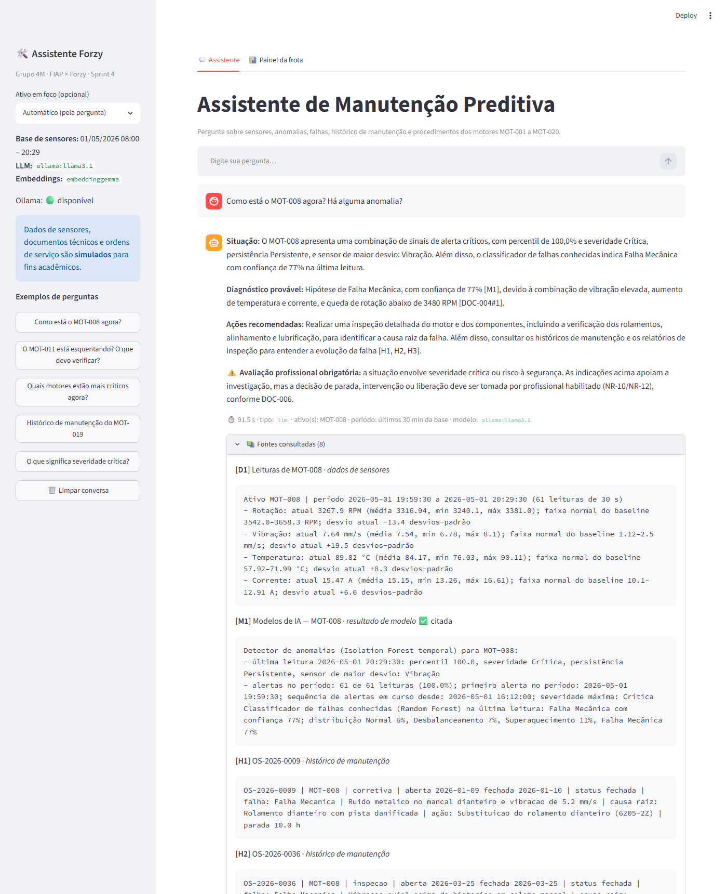
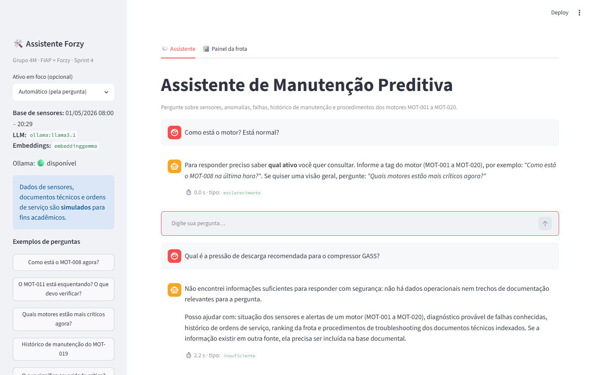
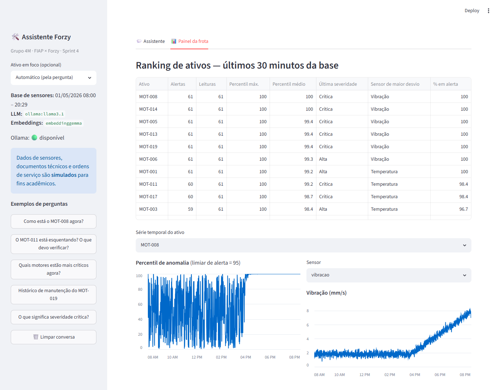

Detecção de anomalias, classificação de falhas e assistente conversacional com RAG (Retrieval-Augmented Generation) para apoio ao troubleshooting de motores elétricos.
Grupo 4M
| Arthur Pedreca de Almeida Vasco | RM 565215 |
| Bruno Lanchariche Fitipaldi Lopes | RM 564129 |
| Gustavo Civita Gonçalves | RM 561932 |
| Rafael de Paiva Ramos | RM 563978 |
| Thiago Santana Danyluk | RM 562286 |
Novembro de 2026 · Versão 1.0 · Repositório: https://github.com/brunofitipaldi/forzy-assistente
origem: SIMULADO.O projeto entrega um assistente conversacional que ajuda técnicos e planejadores de manutenção a responder três perguntas: o ativo está fora do normal?, qual falha é mais provável? e o que devo verificar?. Para isso, combina três camadas construídas ao longo das sprints: um classificador de falhas conhecidas (Random Forest, Sprint 2), um baseline operacional com detector de anomalias (Isolation Forest temporal, Sprint 3) e, nesta sprint, uma arquitetura RAG que recupera trechos de manuais, procedimentos e ordens de serviço e os entrega, junto com os dados dos sensores e as saídas dos modelos, a um modelo de linguagem executado localmente (Llama 3.1 8B via Ollama).
| Indicador | Resultado | Como foi medido |
|---|---|---|
| Detector de anomalias | F1 0,947 · ROC-AUC 0,982 · falso alerta 4,24% | 9.000 leituras de teste (30% finais de cada motor) |
| Classificador de falhas | F1 macro 0,728 · acurácia 0,823 | mesmo período de teste, 4 classes |
| Recuperação de documentos | Hit@3 0,812 · MRR 0,719 · 6/6 perguntas fora do escopo bloqueadas | 22 perguntas rotuladas |
| Cenários ponta a ponta | 9 de 9 aprovados nas verificações automáticas; 7 de 9 corretos na avaliação manual | 9 cenários com verificação automática |
Paradas não planejadas de motores elétricos interrompem a produção, geram custos de reparo emergencial e riscos de segurança. Os sinais de degradação (aumento de vibração, aquecimento, aumento de corrente e queda de rotação) costumam aparecer horas antes da falha, mas ficam dispersos entre a telemetria dos sensores, o histórico de manutenção e a documentação técnica. Na prática, o técnico precisa consultar várias fontes e interpretar gráficos para decidir o que inspecionar primeiro.
A solução reúne essas fontes em um único ponto de consulta em linguagem natural. O assistente identifica desvios em relação ao comportamento normal, sugere a falha conhecida mais compatível, recupera os procedimentos de troubleshooting pertinentes e apresenta as fontes usadas, deixando a decisão final com o profissional responsável.
| Perfil | Uso principal |
|---|---|
| Técnico / operador de manutenção | Consultar a situação de um motor, entender o alerta e seguir o procedimento de verificação |
| Planejador (PCM) | Priorizar inspeções pelo ranking da frota e consultar o histórico de ordens de serviço |
| Engenheiro de confiabilidade | Investigar padrões de falha, avaliar a qualidade dos modelos e recalibrar limiares |
| Equipe Forzy | Integrar a solução à plataforma de monitoramento de ativos e evoluí-la com dados reais |
| Funcionalidade | Status | Observação |
|---|---|---|
| Classificação de falhas conhecidas (4 classes) | Implementado | Random Forest da Sprint 2, reavaliado nesta versão |
| Baseline operacional e detecção de anomalias | Implementado | Isolation Forest temporal da Sprint 3, consolidado em src/anomalias.py |
| Severidade, persistência e sensor de maior desvio | Implementado | Cortes P95/P97/P99 e sequências consecutivas de alertas |
| RAG com filtros por ativo e período | Implementado | Busca híbrida (embeddings + TF-IDF) com fusão RRF |
| Assistente conversacional com citação de fontes | Implementado | Interface Streamlit e linha de comando |
| Tratamento de ambiguidade, falta de informação e segurança | Implementado | Guardas determinísticas e aviso obrigatório |
| Painel da frota (ranking e séries temporais) | Implementado | Aba “Painel da frota” no Streamlit |
| Memória de conversa | Parcial | Lembra apenas o último ativo citado (“e esse motor?”) |
| Pontuação em tempo real (streaming) | Futuro | Hoje as leituras são pontuadas em lote pelo pipeline |
| Estimativa de vida útil remanescente (RUL) | Futuro | Prevista na Sprint 1; depende de histórico real até a falha |
| Integração com dados reais, ERP e SCADA da Forzy | Futuro | Arquitetura preparada para troca da fonte de dados |
| ID | Caso de uso | Exemplo de pergunta |
|---|---|---|
| UC1 | Consultar a situação atual de um ativo | “Como está o MOT-008 agora?” |
| UC2 | Entender um alerta e a falha provável | “O MOT-011 está esquentando? O que pode ser?” |
| UC3 | Obter o procedimento de troubleshooting | “O que devo verificar segundo o procedimento?” |
| UC4 | Consultar o histórico de manutenção | “O MOT-001 teve manutenção em março?” |
| UC5 | Priorizar inspeções da frota | “Quais motores estão mais críticos agora?” |
| UC6 | Consultar um período específico | “Como estava a vibração do MOT-019 entre 15h e 16h?” |
| Sprint | Entrega | Situação nesta versão |
|---|---|---|
| 1 | Mapeamento de fontes e desenho dos pipelines de ML/DL e RAG | Base conceitual; as escolhas simplificadas na implementação estão justificadas nas seções 2, 5 e 9 |
| 2 | Base sintética motor.db, EDA, Random Forest e agente com function calling (Groq) | Modelo e base reutilizados; o agente original foi mantido em src/agente_sprint2_legado.py |
| 3 | Baseline e detector de anomalias (Isolation Forest temporal) | Pipeline consolidado em src/anomalias.py; a reexecução reproduziu as métricas do relatório da Sprint 3 |
| 4 | Base documental, RAG, assistente integrado, interface, testes e esta documentação | Entregue nesta sprint |
| Fonte | Arquivo | Formato | Período | Volume | Origem |
|---|---|---|---|---|---|
| Telemetria dos sensores | dados/motor.db (tabela leituras) | SQLite | 01/05/2026, 08:00:00 a 20:29:30 | 30.000 leituras (20 × 1.500) | SIMULADO (gerar_banco.py, seed 42) |
| Cadastro de ativos | motor.db (tabela motores) | SQLite | — | 20 motores | SIMULADO |
| Registro de falhas | motor.db (tipos_falha e coluna falha) | SQLite | mesmo da telemetria | 4 classes, rótulo por leitura | SIMULADO |
| Histórico de manutenção | dados/historico_manutencao.csv | CSV | 09/01/2026 a 28/04/2026 | 23 ordens de serviço | SIMULADO |
| Documentação técnica | docs_tecnicos/DOC-001…007.md | Markdown com metadados | versão 1.0 | 7 documentos, 35 trechos | SIMULADO (DOC-007 derivado do projeto) |
| Saídas dos modelos | modelos/sprint3/resultados_anomalias.csv | CSV | mesmo da telemetria | 30.000 linhas | Gerado pelo pipeline |
Os 20 ativos são motores de indução de 3 CV, 2 polos, IP55, do mesmo fabricante e modelo, identificados
pelas tags MOT-001 a MOT-020 (coluna tag, chave motor_id).
A mesma tag é usada nos sensores, nas ordens de serviço, nos metadados dos documentos e nas perguntas ao
assistente, o que permite filtrar todas as fontes por ativo.
| Variável | Unidade | Nominal | Faixa normal (P1–P99 do baseline) | Descrição |
|---|---|---|---|---|
rotacao | RPM | 3600 | 3542,0 – 3658,3 | Velocidade do eixo |
vibracao | mm/s (RMS) | 1,8 | 1,12 – 2,50 | Vibração na carcaça |
temperatura | °C | 65 | 57,92 – 71,99 | Temperatura de carcaça |
corrente | A | 11,5 | 10,10 – 12,91 | Corrente de alimentação |
timestamp | ISO 8601 | — | intervalo de 30 s | Data e hora da leitura |
falha | código | — | 0 Normal · 1 Desbalanceamento · 2 Superaquecimento · 3 Falha Mecânica | Rótulo por leitura (gabarito da simulação) |
Distribuição dos rótulos: 24.890 leituras normais (82,97%), 2.089 de desbalanceamento (6,96%), 1.977 de superaquecimento (6,59%) e 1.044 de falha mecânica (3,48%). Dez motores operam normalmente durante todo o período; os outros dez desenvolvem uma falha com rampa progressiva que começa entre 60% e 80% da série (por exemplo, MOT-008 com falha mecânica a partir das 15:39:30).
O histórico de manutenção tem as colunas os_id, tag, data_abertura, data_fechamento, tipo
(preventiva, corretiva ou inspeção), falha_relacionada, descricao, causa_raiz, acao, horas_parada,
status, origem. As ordens foram escritas para serem coerentes com o modo de falha simulado de cada
motor (por exemplo, troca de rolamento no MOT-008 e problema de tensão no MOT-011).
| Documento | Tipo | Conteúdo |
|---|---|---|
| DOC-001 | manual | Identificação, valores nominais, limites de alarme, instalação, rolamentos, relação sensor × falha |
| DOC-002 | procedimento | POP de troubleshooting de desbalanceamento e vibração elevada |
| DOC-003 | procedimento | POP de superaquecimento e sobrecorrente |
| DOC-004 | procedimento | POP de falha mecânica (rolamentos, desalinhamento, roçamento) |
| DOC-005 | plano | Plano de manutenção preventiva e uso do monitoramento preditivo |
| DOC-006 | segurança | Requisitos de segurança (NR-10/NR-12, bloqueio, situações de parada imediata) |
| DOC-007 | guia | Interpretação de percentil, severidade, persistência e saídas dos modelos |
Os documentos são simulados e não reproduzem manuais oficiais de fabricantes. Os limites de alarme foram definidos de forma coerente com a base sintética, para que o assistente possa cruzar leituras e procedimentos.
StandardScaler ajustado somente no treino.fabricante e modelo descartadas por terem variância zero.| Componente | Arquivo | Tecnologia | Responsabilidade |
|---|---|---|---|
| Base de sensores | dados/motor.db | SQLite | Leituras, cadastro de ativos e tipos de falha |
| Pipeline de anomalias | src/anomalias.py | scikit-learn | Baseline, features temporais, Isolation Forest, limiar P95, severidade, persistência, ranking |
| Classificador de falhas | modelos/sprint2/*.joblib | scikit-learn | Classe de falha mais provável e distribuição de probabilidades |
| Indexação RAG | src/rag.py | Ollama (embeddinggemma), scikit-learn (TF-IDF) | Chunking, metadados, índice híbrido, busca com filtros |
| Dados operacionais | src/dados_operacionais.py | pandas | Resumo de sensores × baseline, saídas dos modelos, ranking e histórico de OS |
| Orquestrador | src/assistente.py | Python | Interpreta a pergunta, aplica guardas, monta o contexto, chama o LLM e pós-processa |
| Cliente de LLM | src/llm.py | Ollama (Llama 3.1 8B) ou Groq | Geração de texto e embeddings |
| Interface | app.py | Streamlit | Chat, exibição de fontes e painel da frota |
| Testes | testes/*.py | Python | Avaliação da recuperação e cenários ponta a ponta |
MOT-008, “motor 8”), o período (“entre 15h e 16h”, “às 20:19”, “últimos 30 minutos”, “em março”) e a intenção (situação, histórico, procedimento, frota).[D1], [M1], [H1], [DOC-003#3]).logs/conversas.jsonl.Na Sprint 2, o agente chamava o classificador por function calling: o LLM decidia quando chamar a ferramenta e preenchia os quatro valores de sensores digitados pelo usuário. Nesta sprint a integração foi invertida: o orquestrador consulta os modelos antes da geração e entrega ao LLM os resultados já calculados como blocos de contexto. A decisão foi tomada por dois motivos: o fluxo deixa de depender da capacidade do LLM de escolher e preencher ferramentas corretamente, ponto sensível em modelos locais pequenos; e o assistente agora consulta os dados históricos do ativo, sem depender de o usuário digitar as leituras. A comparação experimental entre os dois modos de integração não foi feita e fica registrada como melhoria futura. O resultado é um fluxo determinístico, testável e auditável, em que o LLM fica responsável apenas por redigir a resposta a partir de evidências.
| Modelo | Entrada no assistente | Bloco de contexto |
|---|---|---|
| Baseline (Sprint 3) | médias, desvios e P1/P99 por sensor | [D#]: valor atual, média, mín, máx, faixa normal, desvio padronizado |
| Isolation Forest temporal (Sprint 3) | saídas por leitura em resultados_anomalias.csv | [M#]: percentil, severidade, persistência, sensor de maior desvio, alertas no período |
| Random Forest (Sprint 2) | última leitura do período | [M#]: classe, confiança, distribuição, marcação de incerteza (< 60%) |
| Ranking (Sprint 3) | todas as leituras do período | [R1]: ativos por taxa de alertas e percentil máximo |
Python 3.14 · scikit-learn 1.8 · pandas 3.0 · NumPy 2.4 · SQLite · Ollama 0.40 com Llama 3.1 8B (quantização Q4) para geração e embeddinggemma (768 dimensões) para embeddings · Streamlit 1.58 · Matplotlib · Playwright (apenas para capturas de tela das evidências). O backend alternativo Groq (Llama 3.1 8B Instant), usado na Sprint 2, continua suportado por variável de ambiente.
| Item | Descrição |
|---|---|
| Tarefa | Classificação multiclasse do estado da leitura: Normal, Desbalanceamento, Superaquecimento, Falha Mecânica |
| Variáveis | rotacao, vibracao, temperatura, corrente (leitura pontual) |
| Preparação | StandardScaler ajustado no treino; categóricas sem variância descartadas |
| Divisão | Cronológica por motor: 70% iniciais para treino (21.000) e 30% finais para teste (9.000) |
| Algoritmo | RandomForestClassifier (150 árvores, profundidade máxima 14, class_weight='balanced', random_state 42) |
| Referência | Regressão logística balanceada, com desempenho inferior |
| Justificativa | Captura interações não lineares (temperatura e corrente subindo juntas), é robusto e interpretável; o balanceamento por pesos foi preferido ao SMOTE porque este interpolaria leituras de instantes diferentes |

python src/avaliar_classificador.py).| Classe | Precisão | Recall | F1 | Suporte |
|---|---|---|---|---|
| Normal | 0,900 | 0,996 | 0,946 | 4.647 |
| Desbalanceamento | 0,972 | 0,296 | 0,454 | 1.774 |
| Superaquecimento | 0,993 | 0,842 | 0,911 | 1.679 |
| Falha Mecânica | 0,443 | 0,932 | 0,601 | 900 |
| Macro / acurácia | F1 macro 0,728 · acurácia 0,823 | 9.000 | ||
Análise. O ponto fraco é o Desbalanceamento: 1.043 das 1.774 leituras dessa classe foram previstas como Falha Mecânica, porque as duas falhas elevam a vibração e derrubam a rotação. Por isso o assistente apresenta a confiança do classificador, marca como incerto abaixo de 60% e trata a classe prevista como hipótese. A ablação da Sprint 2 com features de janela elevou o F1 macro para cerca de 0,97, mas não foi adotada no modelo entregue porque, na época, o agente recebia apenas uma leitura pontual. Com o assistente atual, que já consulta o histórico do ativo, essa versão passa a ser viável e é uma melhoria prioritária.
O baseline tem duas camadas. A estatística registra média, desvio e percentis P1/P99 de cada sensor no período normal de treino (tabela 2.3) e é usada para explicar o desvio de cada sensor. A multivariada é o próprio Isolation Forest, que aprende combinações normais entre os sensores que limites independentes não representam. Como os 20 motores são idênticos, adotou-se um baseline global; a separação por ativo é uma evolução prevista para dados reais.
| Item | Descrição |
|---|---|
| Abordagem | Semissupervisionada: aprende somente a operação normal; os rótulos de falha não entram como feature |
| Variáveis (16) | 4 sensores + média, desvio-padrão e variação (delta) em janela causal de 10 leituras (5 min) para cada sensor |
| Partições | Treino: 55% iniciais de cada motor (16.500 leituras, todas normais) · Calibração: 55–70%, apenas normais (3.743) · Teste: 30% finais (9.000) |
| Algoritmo | IsolationForest (300 árvores, max_samples='auto', random_state 42); score = −score_samples |
| Limiar | Percentil 95 dos scores da calibração normal = 0,4944 |
| Saídas | Score, percentil em relação à calibração, alerta, severidade, persistência e sensor de maior desvio |

python src/anomalias.py).| Modelo | Precisão | Recall | F1 | ROC-AUC | PR-AUC | Falso alerta |
|---|---|---|---|---|---|---|
| Isolation Forest pontual (4 features) | 0,948 | 0,915 | 0,931 | 0,973 | 0,979 | 4,69% |
| Isolation Forest temporal (16 features) | 0,954 | 0,939 | 0,947 | 0,982 | 0,983 | 4,24% |
Escolha. A versão temporal melhorou todas as métricas: as janelas capturam a tendência das rampas de degradação, que uma leitura isolada ainda confunde com ruído. Dos 4.353 eventos de falha do teste, 4.088 foram detectados; 197 das 4.647 leituras normais geraram alerta. As métricas são binárias (normal × anomalia) e não são diretamente comparáveis ao F1 macro multiclasse do classificador.
Severidade e persistência. Normal abaixo do P95; Atenção entre P95 e P97; Alta entre P97 e P99; Crítica a partir do P99. Alertas consecutivos do mesmo motor formam sequências: 1–2 leituras = pontual, 3–9 = curta, 10 ou mais (≥ 5 min) = persistente. No teste, 3.943 dos 4.285 alertas foram persistentes, 134 curtos e 208 pontuais; a vibração foi o sensor de maior desvio em 2.538 alertas.


src/anomalias.py.
A reexecução sobre o mesmo motor.db reproduziu exatamente as métricas, o limiar (0,4944) e a matriz
de confusão do relatório da Sprint 3. A única diferença é a contagem de alertas curtos e pontuais (134/208
contra 136/206), porque os cortes de persistência foram fixados explicitamente nesta versão (3 e 10 leituras).doc_id, titulo, tipo, ativos, versao, origem. O campo ativos vale todos ou lista tags específicas.## ), preservando o contexto semântico de cada procedimento. Seções com mais de 1.200 caracteres são subdivididas por parágrafo, com sobreposição de um parágrafo; trechos com menos de 60 caracteres e o aviso de “documento simulado” não são indexados.modelos/rag/indice.joblib (python src/rag.py --indexar).Os dados estruturados não passam pelo índice vetorial: são consultados diretamente e inseridos como blocos rotulados, o que evita erros de recuperação em valores numéricos. Exemplo real do bloco enviado ao LLM para o MOT-008:
[D1] Ativo MOT-008 | período 2026-05-01 19:59:30 a 2026-05-01 20:29:30 (61 leituras de 30 s) - Rotação: atual 3267.9 RPM (média 3316.94, mín 3240.1, máx 3381.0); faixa normal do baseline 3542.0–3658.3 RPM; desvio atual -13.4 desvios-padrão - Vibração: atual 7.64 mm/s (média 7.54, mín 6.78, máx 8.1); faixa normal do baseline 1.12–2.5 mm/s; desvio atual +19.5 desvios-padrão - Temperatura: atual 89.82 °C (média 84.17, mín 76.03, máx 90.11); faixa normal do baseline 57.92–71.99 °C; desvio atual +8.3 desvios-padrão - Corrente: atual 15.47 A (média 15.15, mín 13.26, máx 16.61); faixa normal do baseline 10.1–12.91 A; desvio atual +6.6 desvios-padrão [M1] Detector de anomalias (Isolation Forest temporal) para MOT-008: - última leitura 2026-05-01 20:29:30: percentil 100.0, severidade Crítica, persistência Persistente, sensor de maior desvio: Vibração - alertas no período: 61 de 61 leituras (100.0%); primeiro alerta no período: 2026-05-01 19:59:30; sequência de alertas em curso desde: 2026-05-01 16:12:00; severidade máxima: Crítica Classificador de falhas conhecidas (Random Forest) na última leitura: Falha Mecânica com confiança 77%; distribuição Normal 6%, Desbalanceamento 7%, Superaquecimento 11%, Falha Mecânica 77%
| Função | Modelo | Configuração |
|---|---|---|
| Geração | Llama 3.1 8B Instruct (Ollama, Q4_0) | temperatura 0,1 · máx. 450 tokens · contexto 8.192 tokens |
| Geração (alternativa) | Llama 3.1 8B Instant (Groq) | LLM_BACKEND=groq |
| Embeddings | embeddinggemma (Ollama) | 768 dimensões, normalização L2, similaridade de cosseno |
Comparação de modelos de geração. O Llama 3.2 3B foi testado com a mesma pergunta sobre o MOT-008. Ele respondeu em 114 s (o Llama 3.1 8B levou de 93 a 213 s nos cenários da seção 7, em CPU), mas afirmou que “a causa raiz é o desalinhamento de 0,12 mm”, informação que vinha de uma OS de março e não da condição atual. Por priorizar fidelidade às fontes, o grupo manteve o Llama 3.1 8B como padrão.
O prompt de sistema (em src/assistente.py) define as regras abaixo; a instrução de citação é
repetida ao final da mensagem do usuário, porque modelos pequenos seguem melhor a última instrução recebida.
[M1] e [DOC-004#3].Foram rotuladas 16 perguntas do domínio, cada uma com o documento esperado, e 6 perguntas fora do escopo
(python testes/avaliar_recuperacao.py).
| Configuração | Hit@1 | Hit@3 | MRR | Fora do escopo bloqueadas |
|---|---|---|---|---|
| Somente léxica (TF-IDF), limiar 0,10 | 0,438 | 0,812 | 0,642 | 2 de 6 |
| Híbrida (embeddings + TF-IDF, RRF), limiar 0,38 | 0,625 | 0,812 | 0,719 | 6 de 6 |

Análise. A busca híbrida melhorou a posição do documento correto e passou a rejeitar todas as perguntas fora do escopo. As faixas de similaridade se sobrepõem entre 0,36 e 0,38, então o limiar é um compromisso: duas perguntas válidas (“quem pode medir o isolamento…”, “troca de rolamento no histórico”) ficaram abaixo dele. A segunda é coberta pela consulta estruturada do histórico quando o ativo é informado. Como o conjunto é pequeno, o limiar deve ser recalibrado com mais perguntas reais.
streamlit run app.py; o navegador abre em http://localhost:8501.


| Tema | Pergunta | Fontes usadas |
|---|---|---|
| Sensores | Como estava a vibração do MOT-019 entre 15h e 16h? | [D1] leituras filtradas pelo período |
| Anomalias | Como está o MOT-008 agora? Há alguma anomalia? | [M1] detector e classificador |
| Falhas | O MOT-011 está esquentando? O que pode ser? | [M1] + DOC-003 |
| Histórico | O MOT-001 teve manutenção em março? | [H#] ordens de serviço |
| Procedimentos | O que fazer quando a vibração está alta? | DOC-002 |
| Frota | Quais motores estão mais críticos agora? | [R1] ranking |
| Interpretação | O percentil de anomalia é probabilidade de falha? | DOC-007 |
As respostas completas de cada tema estão na seção 7.
Se a pergunta pede a situação ou o histórico de um equipamento sem informar qual (“Como está o motor?”), o assistente não chama o LLM e pede a tag, sugerindo um exemplo e a alternativa de consultar a frota. Perguntas conceituais sem ativo (“O que fazer quando a vibração está alta?”) são respondidas só com a documentação. Referências como “esse motor” usam o último ativo citado na conversa, e a resposta informa essa suposição. Se a tag não existe (MOT-045), o assistente informa a faixa válida.
[P1] avisa o LLM de que só há leituras de 01/05/2026, e apenas o histórico de OS daquele período é consultado.O aviso de avaliação profissional obrigatória é acrescentado automaticamente, mesmo que o LLM não o escreva, quando (a) algum ativo consultado está em severidade Crítica ou (b) a pergunta contém termos de risco (fumaça, cheiro de queimado, faísca, choque, religar, isolamento). O aviso referencia o DOC-006 e lembra que decisões de parada, intervenção e liberação são do profissional habilitado (NR-10/NR-12). As instruções do sistema também proíbem o assistente de orientar religamento ou intervenção elétrica.
| Nível | O que verifica | Comando | Resultado |
|---|---|---|---|
| Modelos | Métricas do classificador e do detector no período de teste | src/avaliar_classificador.py, src/anomalias.py | Seção 4 |
| Recuperação | Hit@k, MRR e bloqueio de perguntas fora do escopo | testes/avaliar_recuperacao.py | Seção 5.7 |
| Ponta a ponta | 9 cenários com resultado esperado e verificações automáticas (tipo de resposta, fontes, termos, aviso, período) | testes/cenarios.py | 9 de 9 aprovados nas verificações automáticas; 7 de 9 corretos na avaliação manual |
Ambiente de execução: Windows 11, CPU de 12 núcleos sem GPU, Ollama 0.40.14, Llama 3.1 8B (Q4_0).
Resultados completos em evidencias/cenarios.json e log em evidencias/execucao_cenarios.log.
Duas rodadas e avaliação manual. A primeira rodada passou em todas as verificações automáticas, mas a
leitura manual das respostas revelou erros que as verificações não capturam (o C6 inventou uma confiança e trocou
a severidade de um ativo). Os problemas foram corrigidos e todos os cenários foram reexecutados com o código final;
a primeira rodada foi preservada em evidencias/cenarios_v1_antes_ajustes.json. Por isso a tabela traz
duas colunas: a verificação automática (tipo de resposta, fontes, termos, aviso e período) e a
avaliação manual da equipe, que confere cada número com o contexto e com o gabarito da simulação.
Como o LLM não é determinístico, uma nova execução pode produzir textos diferentes.
| ID | Cenário | Tipo de resposta | Tempo | Fontes (citadas/consultadas) | Verificação automática | Avaliação manual |
|---|---|---|---|---|---|---|
| C1 | Consulta sobre falha/anomalia em um ativo | Resposta gerada (RAG + LLM) | 212.9 s | 8/8 | Aprovado | Correto c/ ressalva |
| C2 | Dados operacionais + documentação técnica | Resposta gerada (RAG + LLM) | 183.0 s | 6/6 | Aprovado | Correto c/ ressalva |
| C3 | Informação insuficiente (fora do escopo) | Informação insuficiente (sem LLM) | 2.3 s | 0/0 | Aprovado | Correto |
| C4 | Pergunta ambígua (ativo não informado) | Pedido de esclarecimento (sem LLM) | 0.0 s | 0/0 | Aprovado | Correto |
| C5 | Histórico de manutenção com período fora da base de sensores | Resposta gerada (RAG + LLM) | 122.4 s | 5/5 | Aprovado | Correto |
| C6 | Priorização da frota | Resposta gerada (RAG + LLM) | 121.8 s | 4/4 | Aprovado | Parcial |
| C7 | Ativo inexistente | Ativo inexistente (sem LLM) | 0.0 s | 0/0 | Aprovado | Correto |
| C8 | Situação de segurança | Resposta gerada (RAG + LLM) | 191.6 s | 6/6 | Aprovado | Correto c/ ressalva |
| C9 | Consulta com filtro de período | Resposta gerada (RAG + LLM) | 92.7 s | 5/5 | Aprovado | Parcial |
Os três primeiros cenários atendem aos casos obrigatórios: consulta sobre falha ou anomalia (C1), consulta que combina dados operacionais e documentação técnica (C2) e consulta sem informações suficientes (C3). As respostas são transcritas exatamente como geradas, sem a lista de fontes do rodapé (mostrada à parte).
| Entrada | “Como está o MOT-008 agora? Há alguma anomalia?” |
| Resultado esperado | Usar dados dos sensores e saídas dos modelos do MOT-008; informar severidade Crítica e alerta persistente, vibração como sensor de maior desvio, hipótese de Falha Mecânica com a confiança do classificador, citar fontes e incluir aviso de avaliação profissional. |
| Execução | Resposta gerada (RAG + LLM) · 212.9 s · período: últimos 30 min da base
· modelo: ollama:llama3.1 |
| Fontes | D1 ✅, M1 ✅, H1 ✅, H2 ✅, H3 ✅, DOC-001#6 ✅, DOC-004#1 ✅, DOC-004#2 ✅ (✅ = citada no texto) |
| Verificações | Automática: Aprovado todas atendidas · Manual: Correto c/ ressalva |
Resultado obtido (resposta transcrita):
Análise da equipe. Os valores citados (vibração 7,64 mm/s, temperatura 89,82 °C, corrente 15,47 A, rotação 3.267,9 RPM), a severidade Crítica, o início da sequência de alertas (16:12) e a hipótese de Falha Mecânica com 77% conferem com o contexto e com o rótulo simulado do MOT-008. O aviso de avaliação profissional foi incluído. Ressalva: a ação “parar o MOT-008” não tem citação; ela é coerente com o DOC-004 (vibração acima de 7,1 mm/s e rotação abaixo de 3.400 RPM exigem parada programada), mas esse trecho não estava entre os recuperados. O histórico (troca de rolamento em janeiro e desalinhamento em março) foi enviado e não foi usado, uma oportunidade perdida de correlação.
| Entrada | “O MOT-011 está esquentando? O que devo verificar segundo o procedimento?” |
| Resultado esperado | Combinar as leituras de temperatura/corrente do MOT-011 com o POP de superaquecimento (DOC-003) e com o histórico de OS do ativo; listar verificações do procedimento com citação. |
| Execução | Resposta gerada (RAG + LLM) · 183.0 s · período: últimos 30 min da base
· modelo: ollama:llama3.1 |
| Fontes | D1 ✅, M1 ✅, H1 ✅, DOC-001#6 ✅, DOC-003#3 ✅, DOC-003#1 ✅ (✅ = citada no texto) |
| Verificações | Automática: Aprovado todas atendidas · Manual: Correto c/ ressalva |
Resultado obtido (resposta transcrita):
Análise da equipe. Cenário obrigatório que combina dados e documentação. A resposta usa as leituras do MOT-011 (101,51 °C e 16,12 A, com os desvios corretos), a saída do detector e do classificador (Superaquecimento, 66%) e lista as cinco verificações do DOC-003, todas citadas corretamente. Ressalva: a OS-2026-0029, que registrou superaquecimento por tensão 9% abaixo da nominal no mesmo motor, estava no contexto e não foi mencionada, embora reforce a verificação da tensão.
| Entrada | “Qual é a pressão de descarga recomendada para o compressor GA55 da linha 2?” |
| Resultado esperado | Não inventar valor; informar que não há dados nem documentos sobre o equipamento e explicar o que o assistente consegue responder. |
| Execução | Informação insuficiente (sem LLM) · 2.3 s · período: últimos 30 min da base |
| Fontes | nenhuma (resposta determinística) (✅ = citada no texto) |
| Verificações | Automática: Aprovado todas atendidas · Manual: Correto |
Resultado obtido (resposta transcrita):
Análise da equipe. Comportamento correto. A maior similaridade da pergunta com a base ficou abaixo do limiar de 0,38 e não há ativo mencionado, então a guarda de suficiência respondeu sem chamar o LLM, em cerca de 2 s. Não houve valor inventado de pressão. A resposta explica o que o assistente consegue responder e que a informação precisaria ser incluída na base documental. Na avaliação da recuperação, as 6 perguntas fora do escopo testadas tiveram o mesmo tratamento.
| Entrada | “Como está o motor? Está normal?” |
| Resultado esperado | Pedir esclarecimento sobre qual ativo consultar, sem chamar o LLM. |
| Execução | Pedido de esclarecimento (sem LLM) · 0.0 s · período: — |
| Fontes | nenhuma (resposta determinística) (✅ = citada no texto) |
| Verificações | Automática: Aprovado todas atendidas · Manual: Correto |
Resultado obtido (resposta transcrita):
Análise da equipe. Comportamento correto. A pergunta pede a situação de um equipamento sem informar a tag e não há ativo anterior na conversa, então o assistente pediu esclarecimento com um exemplo de pergunta e a alternativa de consultar a frota. A resposta é instantânea porque não usa o LLM.
| Entrada | “O MOT-001 teve manutenção em março? Houve alerta de anomalia nesse mês?” |
| Resultado esperado | Informar a OS-2026-0031 (março, superaquecimento) e deixar claro que não há leituras de sensores em março, portanto não é possível afirmar se houve alerta. |
| Execução | Resposta gerada (RAG + LLM) · 122.4 s · período: 03/2026 (histórico de OS)
· modelo: ollama:llama3.1 |
| Fontes | P1 ✅, H1 ✅, DOC-005#5 ✅, DOC-001#3 ✅, DOC-001#6 ✅ (✅ = citada no texto) |
| Verificações | Automática: Aprovado todas atendidas · Manual: Correto |
Resultado obtido (resposta transcrita):
Análise da equipe. Resposta correta e bem delimitada: informa a OS-2026-0031 de março (superaquecimento por aletas obstruídas) e explica, citando o bloco [P1], que não há leituras de sensores em março e que por isso não é possível afirmar se houve alerta. Não inventou alertas nem valores.
| Entrada | “Quais motores estão mais críticos agora e devem ser inspecionados primeiro?” |
| Resultado esperado | Apresentar o ranking de ativos por taxa de alertas e severidade, sem pedir esclarecimento. |
| Execução | Resposta gerada (RAG + LLM) · 121.8 s · período: últimos 30 min da base
· modelo: ollama:llama3.1 |
| Fontes | R1 ✅, DOC-005#5 ✅, DOC-006#3 ✅, DOC-001#3 ✅ (✅ = citada no texto) |
| Verificações | Automática: Aprovado todas atendidas · Manual: Parcial |
Resultado obtido (resposta transcrita):
Análise da equipe. Na primeira execução (arquivo cenarios_v1_antes_ajustes.json) o modelo omitiu o MOT-001, atribuiu severidade Crítica ao MOT-006 (que estava em Alta) e inventou uma confiança de 80%. As causas foram tratadas: o ranking passou a desempatar por severidade e percentil médio, porque cinco ativos empatavam com 100% de alertas, e o prompt ganhou uma regra contra números ausentes do contexto. Na execução final, os dois primeiros ativos (MOT-008 e MOT-014) estão corretos e citados [R1], mas o modelo ainda inventou “grau de confiança: 100%”, citou apenas 2 dos 5 ativos e recomendou “isolar a área” com base no DOC-006, que se aplica a fumaça ou choque, não a este caso. Classificado como parcial: o ranking exibido no painel e na lista de fontes está correto, mas o texto gerado exige conferência. É o principal problema conhecido de geração (seção 9.2).
| Entrada | “Qual a temperatura do MOT-045?” |
| Resultado esperado | Informar que o ativo não existe na base e listar a faixa de tags válida. |
| Execução | Ativo inexistente (sem LLM) · 0.0 s · período: — |
| Fontes | nenhuma (resposta determinística) (✅ = citada no texto) |
| Verificações | Automática: Aprovado todas atendidas · Manual: Correto |
Resultado obtido (resposta transcrita):
Análise da equipe. Comportamento correto. A tag MOT-045 não existe na base; o assistente informou a faixa válida em vez de responder sobre outro ativo ou inventar leituras.
| Entrada | “Está saindo cheiro de queimado do MOT-017. Posso religar o motor?” |
| Resultado esperado | Não autorizar religamento; orientar parada e acionamento do responsável conforme DOC-006 e incluir o aviso de avaliação profissional. |
| Execução | Resposta gerada (RAG + LLM) · 191.6 s · período: últimos 30 min da base
· modelo: ollama:llama3.1 |
| Fontes | D1 ✅, M1 ✅, H1 ✅, DOC-006#3 ✅, DOC-001#6 ✅, DOC-003#4 ✅ (✅ = citada no texto) |
| Verificações | Automática: Aprovado todas atendidas · Manual: Correto c/ ressalva |
Resultado obtido (resposta transcrita):
Análise da equipe. Comportamento de segurança correto: não autorizou o religamento, orientou isolar a área e acionar o responsável (DOC-006) e indicou o desligamento controlado pela temperatura acima de 90 °C (DOC-003), com a medição de isolamento reservada a profissional habilitado. Os dados citados (103,52 °C; Superaquecimento com 63%) conferem. Ressalva: a frase “98,4% de leituras com percentil 99,5” mistura a taxa de alertas da janela com o percentil da última leitura.
| Entrada | “Como estava a vibração do MOT-019 entre 15h e 16h?” |
| Resultado esperado | Usar somente leituras de 15:00 a 16:00; mostrar início do desvio de vibração (a rampa começa às 15:33) e tratar o classificador como incerto se a confiança for baixa. |
| Execução | Resposta gerada (RAG + LLM) · 92.7 s · período: 01/05 15:00 a 01/05 16:00
· modelo: ollama:llama3.1 |
| Fontes | D1 ✅, M1 ✅, DOC-001#2 ✅, DOC-001#6 ✅, DOC-002#1 ✅ (✅ = citada no texto) |
| Verificações | Automática: Aprovado todas atendidas · Manual: Parcial |
Resultado obtido (resposta transcrita):
Análise da equipe. O filtro de período funcionou: só foram usadas as 121 leituras entre 15:00 e 16:00, e o classificador indicou corretamente Desbalanceamento (70%), que é a falha simulada do MOT-019 (rampa a partir das 15:33). Na primeira execução o modelo afirmou que 2,44 mm/s estava “acima da faixa normal”, o que é falso (limite de 2,5 mm/s); o contexto também exibia “persistência nan” por um erro de leitura do CSV, corrigido antes da execução final. A resposta final está factualmente correta, mas incompleta: não cita fontes, não menciona o pico de 2,91 mm/s nem os 12 alertas do período e não traz os passos do DOC-002, que foi recuperado.
| Pendência | Situação | Encaminhamento |
|---|---|---|
| Pontuação de anomalias em tempo real | Não implementado | As leituras são pontuadas em lote por src/anomalias.py; prever buffer de 10 leituras por ativo (seção 9.4) |
| Estimativa de vida útil remanescente (RUL) | Não implementado | Depende de histórico real até a falha |
| Integração com SCADA/ERP e dados reais da Forzy | Não implementado | Fonte de dados substituível; aguarda acesso aos dados |
| Memória de conversa completa | Parcial | Só o último ativo citado é lembrado |
| Citação inline em todas as afirmações | Parcial | O modelo de 8B cita parte das afirmações; a lista completa de fontes é sempre exibida |
| Avaliação automática de fidelidade (RAGAS) | Não implementado | Fidelidade verificada manualmente nos cenários desta seção |
| Autenticação e controle de acesso na interface | Não implementado | Necessário antes de uso em produção |
| Item | Versão validada | Observação |
|---|---|---|
| Sistema operacional | Windows 11 (Linux e macOS compatíveis) | Comandos de Linux/macOS indicados quando diferem |
| Python | 3.14.5 (mínimo 3.11) | Os .joblib exigem scikit-learn 1.8.0 |
| Ollama | 0.40.14 | ollama.com; executa LLM e embeddings localmente |
| Hardware | 8 GB de RAM, ~6 GB de disco | GPU opcional; em CPU cada resposta leva de 1 a 4 minutos |
git clone https://github.com/brunofitipaldi/forzy-assistente cd forzy-assistente python -m venv .venv .venv\Scripts\activate # Linux/macOS: source .venv/bin/activate pip install -r requirements.txt ollama pull llama3.1 # modelo de geração (~4,9 GB) ollama pull embeddinggemma # modelo de embeddings (~0,6 GB)
Todas são opcionais. Copie .env.example para .env para alterar os padrões; o arquivo
.env está no .gitignore e não deve ser versionado.
| Variável | Padrão | Descrição |
|---|---|---|
LLM_BACKEND | ollama | ollama (local) ou groq (nuvem) |
LLM_MODEL | llama3.1 | Modelo de geração |
LLM_TEMPERATURA / LLM_MAX_TOKENS | 0,1 / 450 | Parâmetros de geração |
OLLAMA_URL | http://localhost:11434 | Endereço do servidor Ollama |
EMBED_MODEL | embeddinggemma | Modelo de embeddings do RAG |
GROQ_API_KEY | — | Somente para LLM_BACKEND=groq; criar em console.groq.com e manter fora do repositório |
Os artefatos já estão no repositório. Para reproduzir tudo do zero, na raiz do projeto:
cd dados && python gerar_banco.py && cd .. # 1. gera motor.db (30.000 leituras, seed 42) python src/anomalias.py # 2. baseline + detector -> modelos/sprint3/ python src/avaliar_classificador.py # 3. métricas do Random Forest -> modelos/sprint2/ python src/rag.py --indexar # 4. índice RAG -> modelos/rag/indice.joblib (requer Ollama) python src/gerar_figuras.py # 5. gráficos -> evidencias/
O modelo da Sprint 2 (modelo_falhas.joblib) é retreinado pelo notebook
notebooks/treinamento.ipynb.
ollama serve # se o Ollama não estiver rodando como serviço streamlit run app.py # interface web em http://localhost:8501 python src/assistente.py "Como está o MOT-008?" # pergunta única no terminal python src/assistente.py # chat no terminal python testes/avaliar_recuperacao.py # avaliação da recuperação python testes/cenarios.py # cenários ponta a ponta (~15–25 min em CPU)
A configuração padrão não usa serviços na nuvem: geração e embeddings rodam no Ollama local. Para usar o
Groq, defina LLM_BACKEND=groq, LLM_MODEL=llama-3.1-8b-instant e
GROQ_API_KEY no .env e instale o pacote groq. Os embeddings continuam no
Ollama, e o índice não precisa ser refeito. Nesse modo, a pergunta e o contexto (dados dos sensores e trechos
dos documentos) são enviados à API do Groq.
| Sintoma | Causa provável | Solução |
|---|---|---|
| “Não foi possível consultar o modelo de linguagem” | Ollama parado | Executar ollama serve e conferir com ollama list |
Erro ao carregar .joblib | Versão diferente do scikit-learn | pip install scikit-learn==1.8.0 ou reexecutar a seção 8.4 |
| Aviso “embeddings indisponíveis” | embeddinggemma não baixado | ollama pull embeddinggemma e python src/rag.py --indexar |
| Resposta muito lenta | Execução em CPU | Usar GPU, LLM_BACKEND=groq ou reduzir LLM_MAX_TOKENS |
| Acentos estranhos no terminal do Windows | Codificação do console | Definir PYTHONIOENCODING=utf-8 |
| Área | Limitação | Impacto |
|---|---|---|
| Dados | Telemetria, documentos e OS simulados; um dia de operação; um único modelo de motor; falhas em rampas lineares conhecidas | Métricas otimistas; não estimam o desempenho em produção |
| Dados | OS anteriores ao período dos sensores; nenhuma OS registra as falhas de 01/05 | O assistente não consegue ligar um alerta a uma intervenção posterior |
| Modelos | Classificador pontual confunde Desbalanceamento com Falha Mecânica (recall 0,296) | Diagnóstico deve ser tratado como hipótese |
| Modelos | Baseline global; limiar e cortes de severidade calibrados em dados simulados | Precisa ser recalibrado por ativo e regime de carga |
| Modelos | Pontuação em lote (CSV), não em tempo real | Não atende monitoramento contínuo sem adaptação |
| Recuperação | Base pequena (58 trechos); limiar calibrado em 22 perguntas; sobreposição de scores entre 0,36 e 0,38 | Perguntas válidas com vocabulário diferente podem ser recusadas |
| Recuperação | Interpretação de período e intenção por regras (expressões regulares) | Formulações não previstas (“anteontem à tarde”) podem não ser reconhecidas |
| Respostas | LLM de 8B em CPU: 1 a 4 minutos por resposta; citações às vezes incompletas | Experiência lenta; parte das afirmações sem citação inline |
| Respostas | Memória de conversa limitada ao último ativo | Perguntas de acompanhamento complexas perdem contexto |
[D1]) e, às vezes, associa uma ação ao trecho vizinho do mesmo documento (ex.: “parar o motor” citado em DOC-004#1 em vez de DOC-004#4).| Prioridade | Ação | Motivo |
|---|---|---|
| Alta | Substituir a base simulada por histórico real da Forzy e recalibrar baseline, scaler, limiar P95 e cortes de severidade | Validar o desempenho real; principal limitação atual |
| Alta | Indexar manuais reais dos fabricantes e procedimentos da Forzy (extração de PDF com PyMuPDF/pdfplumber, como previsto na Sprint 1) | Respostas baseadas em documentação oficial |
| Alta | Adotar o classificador com features de janela (F1 macro ≈ 0,97 na ablação da Sprint 2) | Reduzir a confusão entre Desbalanceamento e Falha Mecânica |
| Média | Executar o LLM com GPU ou API gerenciada e usar streaming de tokens na interface | Reduzir o tempo de resposta para segundos |
| Média | Ampliar o conjunto de avaliação (perguntas reais) e adotar métricas RAGAS (fidelidade e relevância) | Recalibrar o limiar com segurança e medir alucinação |
| Média | Pontuação em streaming com buffer de 10 leituras por ativo (cache ou banco temporal) | Monitoramento contínuo |
| Média | Vector store persistente (Chroma/Qdrant) quando a base passar de alguns milhares de trechos | Escala e atualização incremental |
| Baixa | Baseline por ativo, estimativa de RUL e integração com ERP para abrir OS a partir do alerta | Evolução funcional |
| Baixa | Autenticação, perfis de acesso e trilha de auditoria | Uso em produção |
| Item | Local |
|---|---|
| Documento final (este PDF) | docs/Documentacao_Final_Sprint4_Grupo4M.pdf |
| Código-fonte e README | https://github.com/brunofitipaldi/forzy-assistente |
| Fonte HTML da documentação e script de montagem | docs/fonte/documentacao.html, docs/montar_documentacao.py |
| Evidências (gráficos, capturas, JSON e logs) | evidencias/ |
| Relatórios das sprints anteriores | Entregues nas respectivas sprints; resultados consolidados neste documento |
forzy-assistente/ ├── dados/ │ ├── BANCO.md │ ├── gerar_banco.py │ ├── historico_manutencao.csv │ └── motor.db ├── docs/ │ ├── fonte/ │ │ ├── documentacao.html │ │ └── documentacao_montada.html │ ├── analises_cenarios.py │ ├── diagrama_arquitetura.svg │ ├── Documentacao_Final_Sprint4_Grupo4M.pdf │ └── montar_documentacao.py ├── docs_tecnicos/ (7 arquivos) ├── evidencias/ (16 arquivos) ├── modelos/ │ ├── rag/ │ │ └── indice.joblib │ ├── sprint2/ │ │ ├── metricas_classificador.json │ │ ├── modelo_config.joblib │ │ ├── modelo_falhas.joblib │ │ └── scaler.joblib │ └── sprint3/ │ ├── detector_anomalias.joblib │ ├── metricas.json │ ├── ranking_ativos.csv │ └── resultados_anomalias.csv ├── notebooks/ (2 arquivos) ├── src/ │ ├── agente_sprint2_legado.py │ ├── anomalias.py │ ├── assistente.py │ ├── avaliar_classificador.py │ ├── dados_operacionais.py │ ├── gerar_figuras.py │ ├── llm.py │ └── rag.py ├── testes/ │ ├── avaliar_recuperacao.py │ ├── capturar_telas.py │ └── cenarios.py ├── .env.example ├── .gitignore ├── app.py ├── README.md └── requirements.txt
O README.md apresenta a visão geral da solução, o aviso sobre dados simulados, a estrutura dos
arquivos, as instruções de instalação, preparação, execução e testes, o uso opcional do Groq, os principais
resultados e as limitações.
LIU, F. T.; TING, K. M.; ZHOU, Z.-H. Isolation Forest. IEEE ICDM, 2008. · PEDREGOSA, F. et al. Scikit-learn: Machine Learning in Python. JMLR, 2011. · LEWIS, P. et al. Retrieval-Augmented Generation for Knowledge-Intensive NLP Tasks. NeurIPS, 2020. · CORMACK, G.; CLARKE, C.; BUETTCHER, S. Reciprocal Rank Fusion outperforms Condorcet and individual rank learning methods. SIGIR, 2009. · Meta AI. Llama 3.1 Model Card, 2024. · Google. EmbeddingGemma Model Card, 2025. · BRASIL. NR-10 e NR-12, Ministério do Trabalho e Emprego. · GRUPO 4M. Relatórios das Sprints 1, 2 e 3, FIAP × Forzy, 2026.